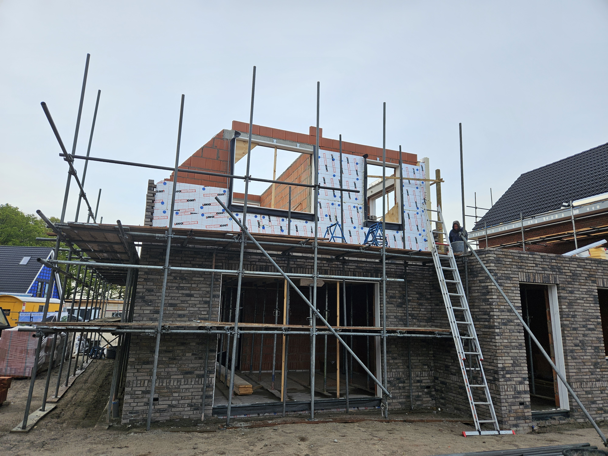
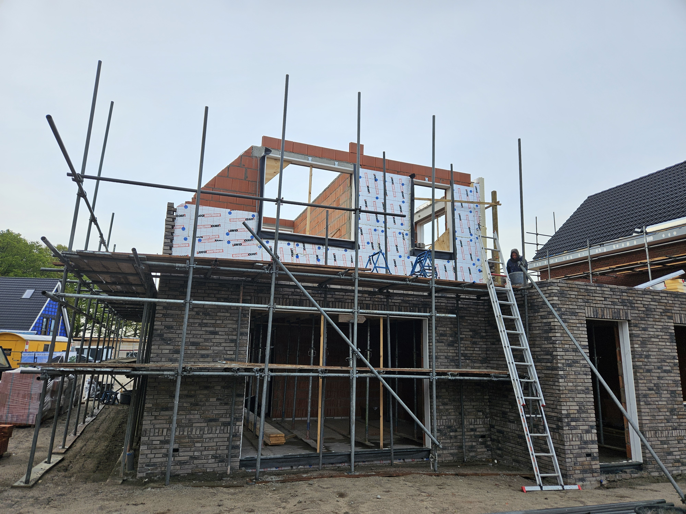

Ik heb altijd al gezegd dat ik heel graag een keer een eigen huis wilde ontwerpen en laten bouwen. Doordat ik het zelf wilde ontwerpen vielen projectwoningen af en had ik echt een kavel nodig. In mijn gemeente gaan kavels weg door middel van een verloting, ik heb met meerder verlotingen meegedaan maar steeds viel ik er buiten. Na de verloting werden er wel weer is kavels teruggeven, maar deze werden dan weg gegeven op een wie het eerst komt die krijgt het basis. Dus daar viste is ook steeds naast het net.
Totdat in begin 2023 mijn broer zei dat hij wel een programma kon schrijven die de website van de gemeente in de gaten hield en een mail verstuurde als er een kavel beschikbaar kwam. Zodoende dat ik in april 2023 een mail ontving met dat er een kavel beschikbaar kwam, deze stond ook op mijn shortlist en dus heb ik hier binnen 30 minuten op gereageerd. Waar vervolgens ook snel vanuit de gemeente het verlossende belletje kwam dat ik nu een optie had op deze kavel.
Nu had ik dus eindelijk die lang gehoopte kavel, maar nu begint het project pas echt! Ik ben begonnen in sketch up tekeningen van huizen te maken. Sommige vielen al direct af omdat ze niet aan het bestemmingsplan voldeden, maar naar 2 maanden had ik een ontwerp waar ik tevreden mee was. Hiermee ben ik naar een bouwkundig tekenaar gegaan, welke van mijn sketchup ontwerp een officiele tekening heeft gemaakt.
De vergunningsaanvraag zelf vergde veel uitzoek werk, ik had nog nooit zoiets gedaan. Ik moest constructietekeningen hebben, energieberekening, geluidsberekeningen en nog veel meer. Ik heb zoveel mogelijk zelf gedaan, maar voor sommige aspecten had ik toch echt een gecertificeerd persoon nodig. Ik heb deze maanden enorm veel geleerd. In oktober 2023 heb ik mijn vergunningsaanvraag ingediend, dat moest in 2023 nog gebeuren want in 2024 zouden de regels veranderen. Ik moest uiteindelijk 1 berekening toevoegen aan de aanvraag maar daarna was hij in december goedgekeurd!
Met een goedgekeurde vergunning kon ik dan eindelijk ook daadwerkelijk de grond kopen van de gemeente, dit is gebeurd in februari 2024. Vervolgens zijn we in maart 2024 officieel met de bouw gestart, dit zou in eerste instantie met een aannemer gebeuren alleen die zouden pas in september kunnen beginnen. Daar wilde ik niet op wachten dus ben ik zelf aan de slag gegaan.
Het eerste was de fundering, de hoeken van het huis waren uitgezet en nu maakten we eerst de randbekisting voor het beton. Waar we vervolgens de muren op hebben gemetseld.


Na de fundering is de beganegrondvloer erop gegaan, en kon ik de ruimtes van het huis uitzetten zodat de metselaars aan de slag konden gaan.
 

Voordat het beton van de verdiepingsvloer gestort kon worden moest eerst al het leidingwerk en elektra in de breedplaatvloer worden verwerkt. Zodra dat gedaan was kon er verder worden gemetseld met de eerste verdieping waarna de zoldervloer tegelijk met het dak aan de beurt was. De kozijnen waren de volgende stap, hier had de leverancier een foutje gemaakt waardoor alle ruiten te groot waren. Geen probleem er is eerst plexiglas ingezet en een paar weken later kwam het glas er dan in.
Waar de woning er van buiten dan zo goed als af ziet moet er binnen nog erg veel gebeuren. Alle elektra moet erin, het leidingwerk en stukwerk zijn een paar van die taken. Waarna ook de badkamer en keuken nog gedaan moeten worden. In december 2024 in het hele traject afgerond en januari 2025 had ik dan echt mijn droomhuis.